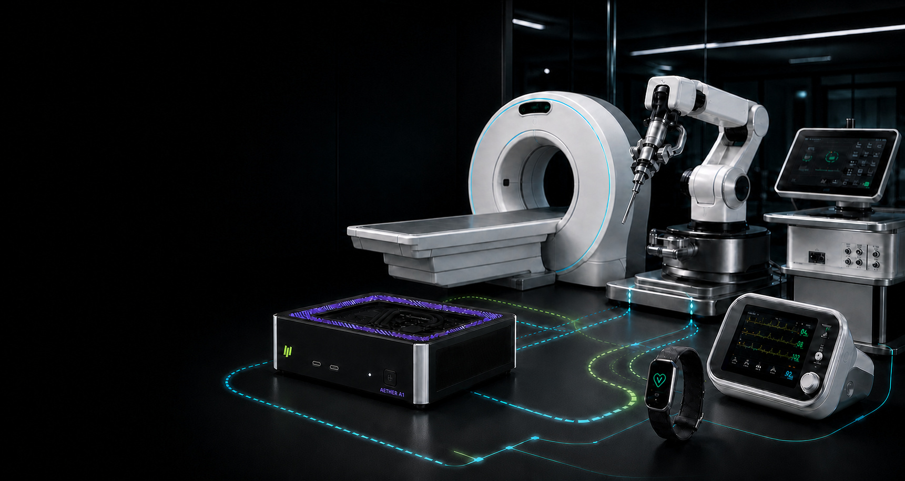

医学影像设备
面向图像重建、增强、分割和设备内辅助工作流的计算平台评估。

COLLABORATION AREAS
面向图像重建、增强、分割和设备内辅助工作流的计算平台评估。
支持视觉、信号和多模态数据处理，以及本地设备控制与分析。
围绕低延迟感知、导航、控制边界和系统冗余开展联合工程。
在功耗、隐私、连接和长期运行约束下评估端侧智能能力。
以上为技术合作方向示例，不代表任何 HOLYCORES 产品已取得医疗器械注册、认证或临床用途授权，也不构成诊断或治疗建议。
PLATFORM CAPABILITIES

联合验证从预期用途、用户、环境和危害分析开始，把模型指标转换为设备级成功标准。验证结果必须记录软硬件版本、数据范围、测试条件与已知边界。
RESPONSIBILITY MODEL
提供计算平台、软件接口、技术资料、已知限制和约定范围内的工程支持。
定义预期用途、系统风险、设计控制、产品验证、注册申报、生产和上市后责任。
负责数据治理、模型开发、性能证据、偏差分析、版本说明和应用集成。
在适用伦理、数据和研究规范下参与需求研究、工作流评价及证据生成。
COLLABORATION PATH
明确预期用途、目标设备、用户、环境和现有基线。
以非临床工程样机验证计算、软件、数据和接口边界。
确定设计输入、风险控制、验证计划和变更流程。
围绕约定平台提供集成、生命周期和问题响应支持。
MEDICAL DEVICE COLLABORATION